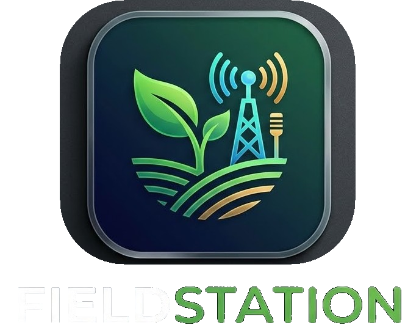

Soil temperature · surface
—
0 cm model estimate

Weather for better gardening
Connecting to forecast data
Checking saved forecast…
Modelled field conditions near your selected location
Rule-based guidance from the forecast, not a crop-specific diagnosis
Hourly temperature, rain chance, wind and humidity
Observed radar · past 2 hours · model outlook · next 12 hours
Observed radar by RainViewer; projected precipitation by Open-Meteo. Map © OpenStreetMap contributors.
RainViewer provides observed radar only. Future frames are a coarse weather-model precipitation estimate, not radar imagery or a storm-track guarantee.
Daily highs, lows and precipitation
Daily GDD estimate · base 10°C / 50°F, no upper cap
Daily historical weather-model estimates · saved locally and optionally synced to your cloud database
Daily historical summaries only — no decades of hourly records. The long-term archive uses one consistent ERA5 reanalysis dataset from 1940 onward, where available.
| Date | High / low | Mean | Rain | Snow | GDD |
|---|---|---|---|---|---|
| Historical records will appear here. | |||||
FieldStation keeps forecasts, reanalysis and physical measurements separate.
Past weather reconstructed from weather models and observations. Useful for climate context, but not equivalent to a thermometer at your property.
Predictions saved when refreshed. They remain forecasts and are never silently relabelled as observed weather.
Reserved for measurements from physical sensors you connect in a future release.